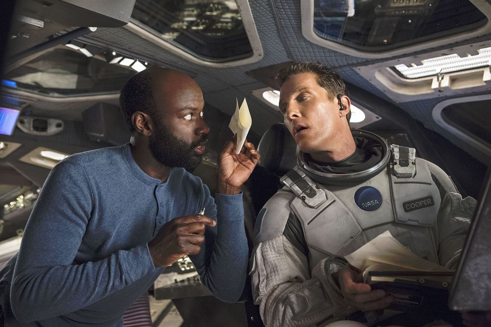

Galeria De Imagenes





Trailer Oficial
La Musica de Interstellar

Explicacion Interstellar
Opinion Personal
Hans Zimmer

Hay una historia muy curiosa con la música de Interstellar, y es que Nolan, antes de aceptar siquiera trabajar en la película, le mandó una carta escrita a máquina a Zimmer para pedirle que compusiera algo en torno a lo que él pensaba que era el tema principal de la historia (todo esto sin contarle nada más sobre el proyecto).
Zimmer encontró inspiración y escribió una pieza que duraba cuatro minutos a piano y órgano: “En
realidad, sólo escribí sobre lo que significa ser padre”
, dijo Zimmer. “Y [Nolan] vino y se
sentó en
mi sofá y se la puse. Me dijo: ‘Bueno, será mejor que haga la película ahora’. Y yo le digo, ¿sobre
qué es la película? Y empezó a describir este enorme viaje, este vasto lienzo del espacio y
filosofía y la ciencia y todas estas cosas. Y yo digo, ‘Espera. Te he escrito esta pequeña cosa
aquí’. Y él dice: “Sí, pero ahora sé cuál es el corazón de la historia”. Así que Nolan hizo la
historia con esta pieza musical haciéndole compañía durante todo el proceso de escritura, durante
todo el rodaje”.